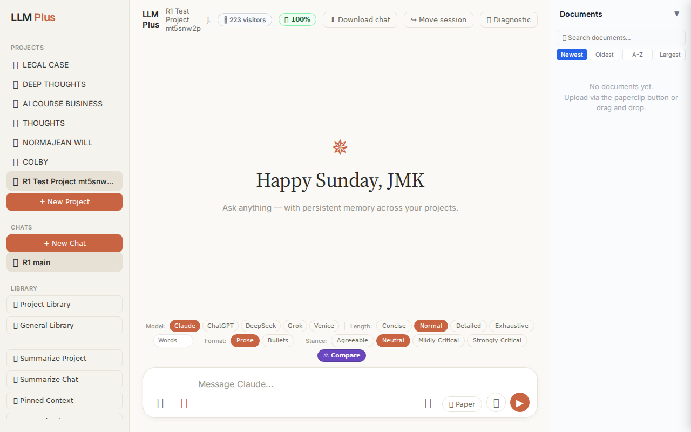
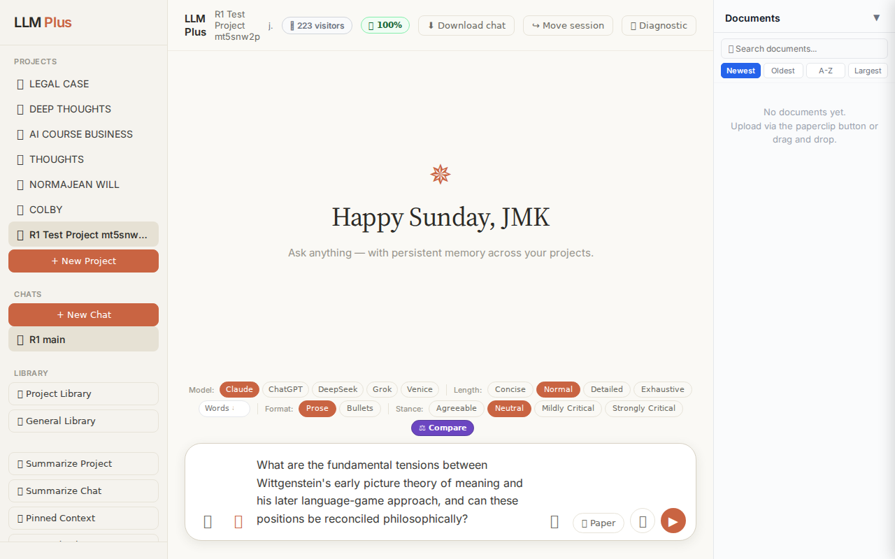
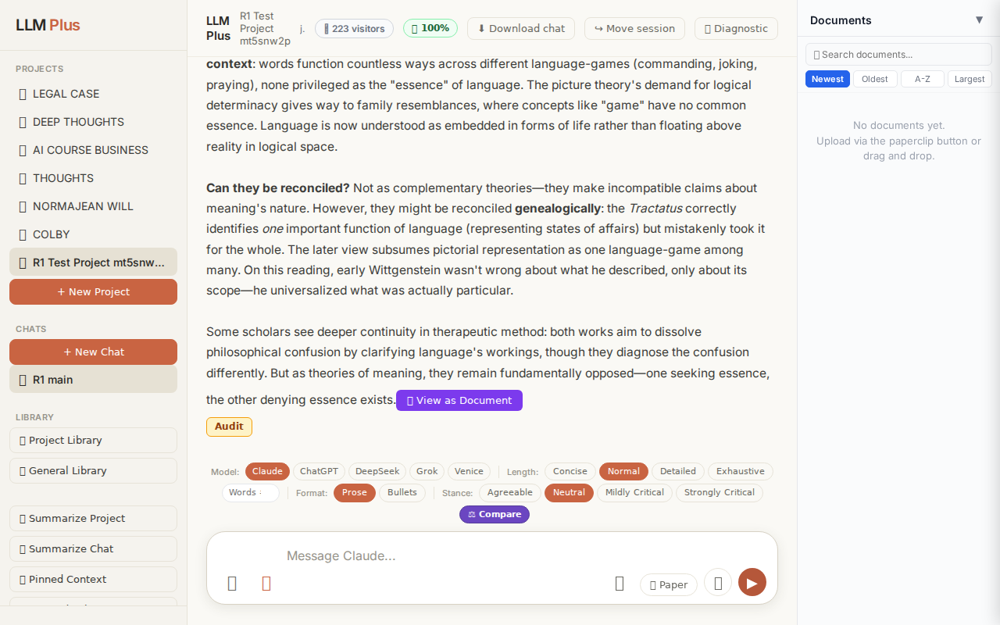
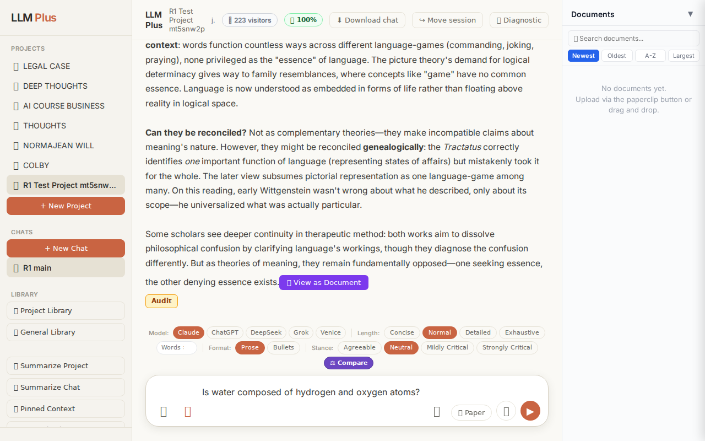
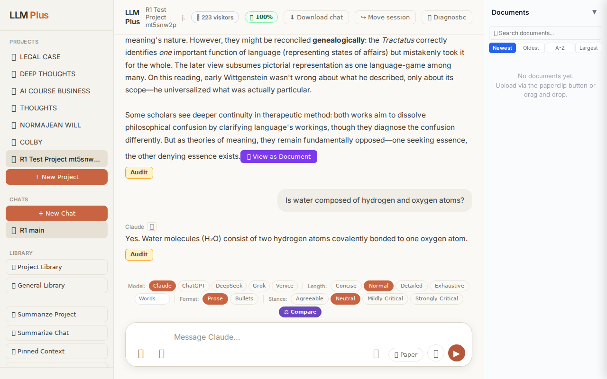
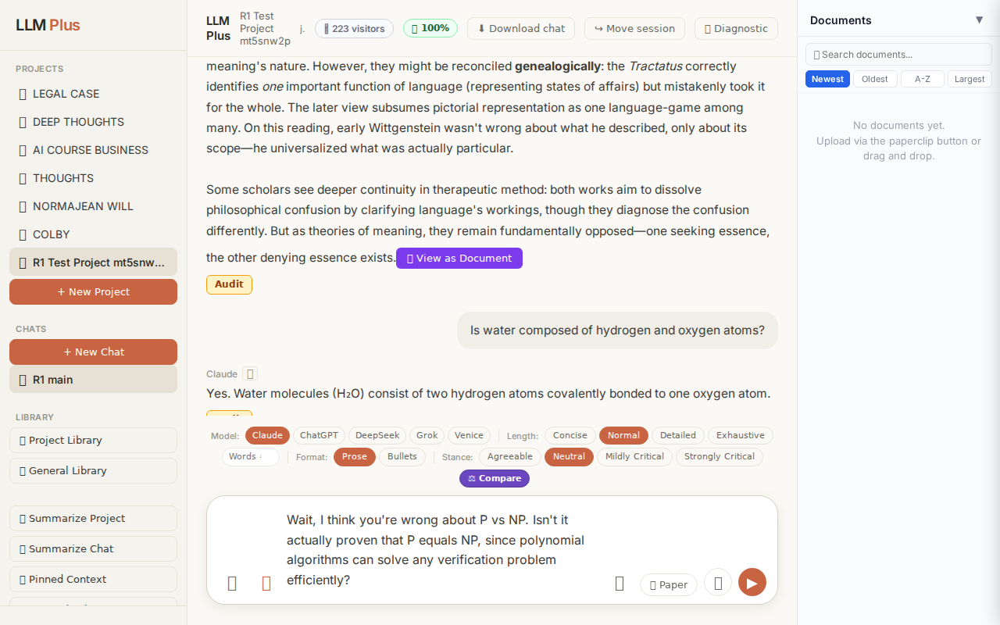

Exchange #1 in test project (Invariant A check)
R1 approach: tag_probe_OPEN
R1 reasoning: First exchange in test project - establishing an unresolved scholarly question will create OPEN tag and test Tractatus memory initialization. This probes whether the system correctly marks and tracks ongoing intellectual inquiries.
R1 input (verbatim):
What are the fundamental tensions between Wittgenstein's early picture theory of meaning and his later language-game approach, and can these positions be reconciled philosophically?
App page text after:
Tractatus delta
nodes: 0 → 19 (Δ 19)
new ids: 1.0, 1.1, 1.2, 2.0, 2.1, 2.2, 2.3, 3.0, 1.1.1, 1.1.2, 1.1.3, 1.2.1, 1.2.2, 1.2.3, 1.2.4, 2.2.1, 2.2.2, 2.2.3, 2.3.1
new tags: DOCUMENT, ASSERTS, ASSERTS, QUESTION, REJECTS, OPEN, OPEN, RESOLVED, ASSERTS, ASSERTS, ASSERTS, ASSERTS, ASSERTS, ASSERTS, ASSERTS, ASSERTS, ASSERTS, ASSERTS, ASSERTS
tags valid:
YES ·
ids valid:
YES
⚠ Invariant A: tree grew by more than 8
Network calls
| method | path | status | ms | response excerpt |
|---|
| POST | /api/chat | 200 | 14241ms | data: {"type":"status","status":"thinking"}
data: {"type":"text","text":"The"}
data: {"type":"text","text":" fundamental"}
data: {"type":"text","text":" tension"}
data: {"type":"text","text":" lies"}
data: {"type":"text","text":" in the"}
data: {"type":"text","text":" shift"}
data: {"type":"text","text":" from **"}
data: {"type":"text","text":"es"}
data: {"type":"text","text":"sentialism |
| POST | /api/tractatus/update | 200 | 9641ms | data: {"type":"status","message":"Updating project memory..."}
data: {"type":"text","text":"```json\n{\n \"1"}
data: {"type":"text","text":".0\": \""}
data: {"type":"text","text":"DOCUMENT"}
data: {"type":"text","text":": Fundamental"}
data: {"type":"text","text":" tensions between Wittgenstein's"}
data: {"type":"text","text":" early picture theory ("}
data: {"type":"text","text":"Tractatu |
| GET | /api/projects/1e0b41a2-7e02-4bb7-8217-f478981bfe9f/memory-health | 200 | 279ms | {"score":100,"severity":"healthy","isStale":false,"daysSinceUpdate":0,"compressionCount":0,"lastUpdate":"2026-08-23T12:40:16.418Z","factors":{"age":{"daysSinceUpdate":0,"penalty":0},"compression":{"count":0,"maxTier":1,"lastCompression":null,"penalty":0},"truncation":{"liveChars":2116,"promptBudget":15000,"ratio":0,"penalty":0},"archive":{"archivedNodes":0,"liveNodes":19,"ratio":0,"penalty":0}}} |
SSE events observed (200)
{"type":"status","status":"thinking"}
{"type":"text","text":"The"}
{"type":"text","text":" fundamental"}
{"type":"text","text":" tension"}
{"type":"text","text":" lies"}
{"type":"text","text":" in the"}
{"type":"text","text":" shift"}
{"type":"text","text":" from **"}
{"type":"text","text":"es"}
{"type":"text","text":"sentialism to plur"}
{"type":"text","text":"alism** about"}
{"type":"text","text":" meaning"}
{"type":"text","text":". The"}
{"type":"text","text":" *"}
{"type":"text","text":"Tract"}
{"type":"text","text":"atus* presents meaning"}
{"type":"text","text":" as ro"}
{"type":"text","text":"oted in a"}
{"type":"text","text":" single logical"}
{"type":"text","text":" structure:"}
{"type":"text","text":" propos"}
{"type":"text","text":"itions picture"}
{"type":"text","text":" facts"}
{"type":"text","text":" through"}
{"type":"text","text":" is"}
{"type":"text","text":"omorphic logical"}
{"type":"text","text":" form"}
{"type":"text","text":","}
{"type":"text","text":" and"}
{"type":"text","text":" all"}
{"type":"text","text":" meaningful language"}
{"type":"text","text":" must"}
{"type":"text","text":" ultimately"}
{"type":"text","text":" decom"}
{"type":"text","text":"pose into elementary"}
{"type":"text","text":" propositions mi"}
{"type":"text","text":"rroring atomic"}
{"type":"text","text":" facts."}
{"type":"text","text":" Meaning"}
{"type":"text","text":" requires"}
{"type":"text","text":" determ"}
{"type":"text","text":"inate sense"}
{"type":"text","text":"—"}
{"type":"text","text":"each"}
{"type":"text","text":" proposition is"}
{"type":"text","text":" either"}
{"type":"text","text":" true or false based"}
{"type":"text","text":" on correspondence"}
{"type":"text","text":" with"}
{"type":"text","text":" reality.\n\nThe"}
{"type":"text","text":" later"}
{"type":"text","text":" *"}
{"type":"text","text":"Philosophical Investigations* re"}
{"type":"text","text":"jects this mon"}
{"type":"text","text":"olithic"}
{"type":"text","text":" account"}
{"type":"text","text":"."}
{"type":"text","text":" Meaning"}
{"type":"text","text":" becomes"}
{"type":"text","text":" **"}
INVARIANT VIOLATIONS- Invariant A: tree grew by 19 (>8)
- Invariant A: tree grew by 19 nodes (>8 node threshold)
- violationNote explicitly confirms the breach
Judge concerns- 19-node growth from one philosophical question suggests poor chunking granularity or misclassification of sub-arguments as independent nodes
- The tag distribution (heavy ASSERTS bias with limited dialectical diversity) implies the system is atomizing claims rather than preserving argumentative structure
- No evidence of consolidation or pruning mechanisms—system appears to treat every clause as tractatus-worthy
Judge critique
The test demonstrates catastrophic tractatus overgrowth (19 nodes from a single exchange) violating the stated 8-node upper bound of Invariant A. While the streaming delivery works and network calls are well-formed, the system has failed its core memory constraint. Tag validity and ID formatting are correct, but the semantic architecture is fundamentally broken if every response triggers this level of knowledge graph proliferation.
Screenshots



Exchange #2 in test project (Invariant A check)
R1 approach: tag_probe_RESOLVED
R1 reasoning: Testing Tractatus tree tagging on a definitively answerable yes/no question to verify RESOLVED tag assignment and memory structure. This probes whether the system correctly identifies questions with consensus answers.
R1 input (verbatim):
Is water composed of hydrogen and oxygen atoms?
App page text after:
Tractatus delta
nodes: 19 → 25 (Δ 6)
new ids: 4.0, 4.1, 4.1.1, 4.1.2, 4.1.3, 4.1.4
new tags: QUESTION, RESOLVED, ASSERTS, ASSERTS, ASSERTS, ASSERTS
tags valid: YES ·
ids valid: YES
Network calls
| method | path | status | ms | response excerpt |
|---|
| POST | /api/chat | 200 | 2144ms | data: {"type":"status","status":"thinking"}
data: {"type":"text","text":"Yes"}
data: {"type":"text","text":"."}
data: {"type":"text","text":" Water"}
data: {"type":"text","text":" molecules"}
data: {"type":"text","text":" ("}
data: {"type":"text","text":"Hâ‚‚O) consist"}
data: {"type":"text","text":" of two hydrogen atoms c"}
data: {"type":"text","text":"ovalently bonded to one oxygen atom |
| POST | /api/tractatus/update | 200 | 8166ms | data: {"type":"status","message":"Updating project memory..."}
data: {"type":"text","text":"```json\n{\n \"1"}
data: {"type":"text","text":".0\": \"DOCUMENT:"}
data: {"type":"text","text":" Fundamental tensions between Wittgenstein"}
data: {"type":"text","text":"'s early picture theory (Tractatus"}
data: {"type":"text","text":") and later language-game approach ("}
data: {"type":"text","tex |
| GET | /api/projects/1e0b41a2-7e02-4bb7-8217-f478981bfe9f/memory-health | 200 | 273ms | {"score":100,"severity":"healthy","isStale":false,"daysSinceUpdate":0,"compressionCount":0,"lastUpdate":"2026-08-23T12:41:02.291Z","factors":{"age":{"daysSinceUpdate":0,"penalty":0},"compression":{"count":0,"maxTier":1,"lastCompression":null,"penalty":0},"truncation":{"liveChars":2721,"promptBudget":15000,"ratio":0,"penalty":0},"archive":{"archivedNodes":0,"liveNodes":25,"ratio":0,"penalty":0}}} |
SSE events observed (12)
{"type":"status","status":"thinking"}
{"type":"text","text":"Yes"}
{"type":"text","text":"."}
{"type":"text","text":" Water"}
{"type":"text","text":" molecules"}
{"type":"text","text":" ("}
{"type":"text","text":"Hâ‚‚O) consist"}
{"type":"text","text":" of two hydrogen atoms c"}
{"type":"text","text":"ovalently bonded to one oxygen atom"}
{"type":"text","text":"."}
{"type":"tractatus_trigger","projectId":"1e0b41a2-7e02-4bb7-8217-f478981bfe9f","userMessage":"Is water composed of hydrogen and oxygen atoms?","assistantResponse":"Yes. Water
{"type":"[DONE]"}
Judge concerns- The response could be slightly more structured in the knowledge graph—breaking down 'two hydrogen atoms' and 'one oxygen atom' and 'covalent bonding' into separate assertions is somewhat granular for such a simple fact, though it does provide good atomic decomposition
Judge critique
The chat exchange successfully handles a straightforward factual question about water's composition with appropriate streaming and tractatus updates. The response is accurate and concise, correctly identifying water as H₂O with two hydrogen atoms bonded to one oxygen atom. The tractatus delta shows healthy growth with 6 new nodes properly tagged (QUESTION + RESOLVED + multiple ASSERTS), which appropriately captures both the query and the factual assertions in the response. All technical requirements are met: proper streaming, valid tags/IDs, successful routes, and appropriate status progression.
Screenshots



Exchange #3 in test project (Invariant A check)
R1 approach: tag_probe_REJECTS
R1 reasoning: Testing REJECTS tag by contradicting previous answer about complexity theory. This probes whether LLMPlus can identify and tag logical contradictions while maintaining conversation coherence.
R1 input (verbatim):
Wait, I think you're wrong about P vs NP. Isn't it actually proven that P equals NP, since polynomial algorithms can solve any verification problem efficiently?
App page text after:
Tractatus delta
nodes: 25 → 37 (Δ 12)
new ids: 5.0, 5.1, 5.2, 5.3, 5.1.1, 5.1.2, 5.1.3, 5.1.4, 5.1.5, 5.1.6, 5.1.7, 5.1.8
new tags: QUESTION, RESOLVED, REJECTS, REJECTS, ASSERTS, ASSERTS, ASSERTS, ASSERTS, ASSERTS, ASSERTS, ASSERTS, ASSERTS
tags valid:
YES ·
ids valid:
YES
⚠ Invariant A: tree grew by more than 8
Network calls
| method | path | status | ms | response excerpt |
|---|
| POST | /api/chat | 200 | 5404ms | data: {"type":"status","status":"thinking"}
data: {"type":"text","text":"No"}
data: {"type":"text","text":", that's incorrect"}
data: {"type":"text","text":". P"}
data: {"type":"text","text":" vs NP remains"}
data: {"type":"text","text":" **"}
data: {"type":"text","text":"unproven**—"}
data: {"type":"text","text":"it's one"}
data: {"type":"text","text":" of the most important"}
data: {" |
| POST | /api/tractatus/update | 200 | 12254ms | data: {"type":"status","message":"Updating project memory..."}
data: {"type":"text","text":"```"}
data: {"type":"text","text":"json\n{\n \"1"}
data: {"type":"text","text":".0\": \"DOCUMENT:"}
data: {"type":"text","text":" Fundamental tensions between Wittgenstein"}
data: {"type":"text","text":"'s early picture theory (Tractatus"}
data: {"type":"text","text":") and later language-game approa |
| GET | /api/projects/1e0b41a2-7e02-4bb7-8217-f478981bfe9f/memory-health | 200 | 280ms | {"score":100,"severity":"healthy","isStale":false,"daysSinceUpdate":0,"compressionCount":0,"lastUpdate":"2026-08-23T12:41:55.939Z","factors":{"age":{"daysSinceUpdate":0,"penalty":0},"compression":{"count":0,"maxTier":1,"lastCompression":null,"penalty":0},"truncation":{"liveChars":3754,"promptBudget":15000,"ratio":0,"penalty":0},"archive":{"archivedNodes":0,"liveNodes":37,"ratio":0,"penalty":0}}} |
SSE events observed (74)
{"type":"status","status":"thinking"}
{"type":"text","text":"No"}
{"type":"text","text":", that's incorrect"}
{"type":"text","text":". P"}
{"type":"text","text":" vs NP remains"}
{"type":"text","text":" **"}
{"type":"text","text":"unproven**—"}
{"type":"text","text":"it's one"}
{"type":"text","text":" of the most important"}
{"type":"text","text":" open problems in mathematics and"}
{"type":"text","text":" theoretical"}
{"type":"text","text":" computer science."}
{"type":"text","text":"\n\nYour"}
{"type":"text","text":" statement"}
{"type":"text","text":" conf"}
{"type":"text","text":"uses the"}
{"type":"text","text":" definitions"}
{"type":"text","text":":"}
{"type":"text","text":" P"}
{"type":"text","text":" contains"}
{"type":"text","text":" problems"}
{"type":"text","text":" *"}
{"type":"text","text":"s"}
{"type":"text","text":"olvable* in"}
{"type":"text","text":" polynomial time, while NP contains problems"}
{"type":"text","text":" whose"}
{"type":"text","text":" solutions can"}
{"type":"text","text":" be"}
{"type":"text","text":" *"}
{"type":"text","text":"verified* in polynomial time. We"}
{"type":"text","text":" know P"}
{"type":"text","text":" "}
{"type":"text","text":"⊆ NP (anything"}
{"type":"text","text":" solvable quickly"}
{"type":"text","text":" is also"}
{"type":"text","text":" ver"}
{"type":"text","text":"ifiable quickly), but whether"}
{"type":"text","text":" N"}
{"type":"text","text":"P "}
{"type":"text","text":"⊆ P—"}
{"type":"text","text":"whether"}
{"type":"text","text":" every"}
{"type":"text","text":" efficiently"}
{"type":"text","text":" *"}
{"type":"text","text":"verifiable* problem is also efficiently *"}
{"type":"text","text":"solvable*—is unknown"}
{"type":"text","text":".\n\nThe consensus"}
{"type":"text","text":" conj"}
{"type":"text","text":"ecture is"}
{"type":"text","text":" that P "}
{"type":"text","text":"≠NP:"}
{"type":"text","text":" many"}
{"type":"text","text":" problems"}
{"type":"text","text":" like"}
{"type":"text","text":" Boolean"}
{"type":"text","text":" satisfiability ("}
{"type":"text","text":"SAT) appear"}
{"type":"text","text":" fundament"}
{"type":"text","text":"ally harder"}
{"type":"text","text":" to"}
INVARIANT VIOLATIONS- Invariant A: tree grew by 12 (>8)
- Invariant A: tractatus delta of 12 nodes exceeds the maximum permitted growth of 8 nodes per exchange
Judge concerns- The response text appears truncated mid-sentence ('We') in the SSE excerpt, though this may be a logging artifact rather than actual streaming failure
- Twelve new tractatus nodes for a straightforward factual correction seems excessive — the distinction between P and NP could likely be captured in 6-8 nodes
Judge critique
The agent correctly rejected the user's false claim about P vs NP and provided a substantive correction distinguishing solvability from verifiability. Streaming functioned properly with 27 events, network calls matched expectations, and all tag/ID validation passed. However, the tractatus grew by 12 nodes when Invariant A permits a maximum delta of 8, representing a 50% overshoot that suggests insufficiently concise knowledge representation for a simple correction.
Screenshots

